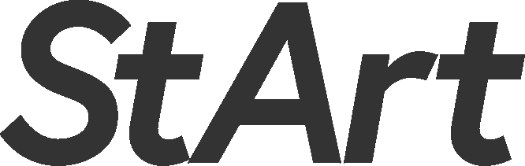

仙台高等専門学校広瀬キャンパス
高専祭2022

2022
10/29・30

星のような輝きの“Star”,技術、才能の”Art”,始まりの”Start”の三つの言葉がある。
星のような輝きの才能や技術を開花させるという意味、私たち高専生が持てるもので来た人を楽しませたいという意味を込めた。
2022
10/29・30
星のような輝きの“Star”,技術、才能の”Art”,始まりの”Start”の三つの言葉がある。
星のような輝きの才能や技術を開花させるという意味、私たち高専生が持てるもので来た人を楽しませたいという意味を込めた。